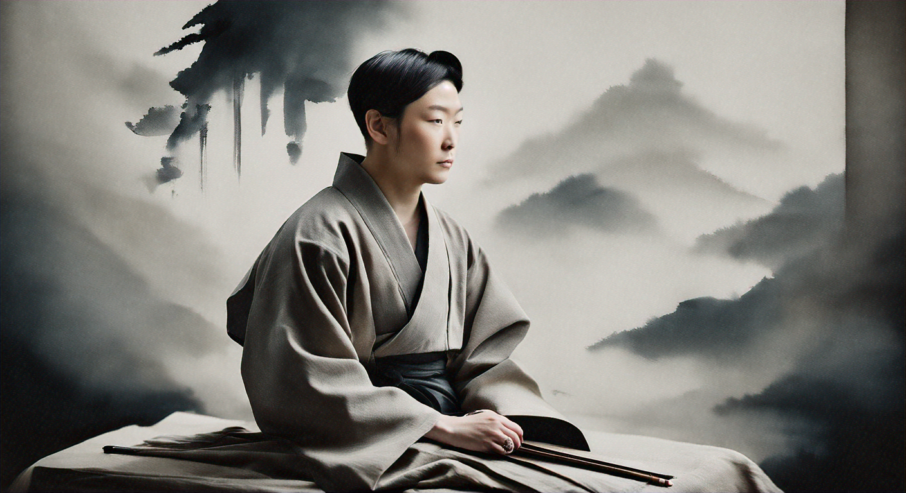

Embrace Imperfection
I am a designer who finds beauty in the imperfect and the transient, drawing inspiration from the natural world.
Wabi-Sabi Vase
Ceramics
Aging Wood Table
Furniture
Rustic Pottery
Ceramics
Wabi-Sabi Vase
Ceramics
Aging Wood Table
Furniture
Rustic Pottery
Ceramics
Wabi-Sabi Vase
Ceramics
Aging Wood Table
Furniture
Rustic Pottery
Ceramics
My work is a reflection of the philosophy of wabi-sabi, celebrating the beauty of imperfection and the passage of time.
What Clients Say
Yuki Tanaka
Art Critic
Hiroshi Nakamura
Gallery Owner
Every piece tells a unique story of beauty and imperfection.
Aiko Suzuki
Interior Designer
An artist who sees the world through a lens of natural elegance.
Kenji Yamamoto
Collector
Her work brings a sense of calm and reflection.
Sakura Matsuda
Art Historian
A perfect blend of tradition and modernity.
Takashi Sato
Museum Curator
Each piece is a testament to the beauty of natural aging.
A true master of capturing the essence of nature.